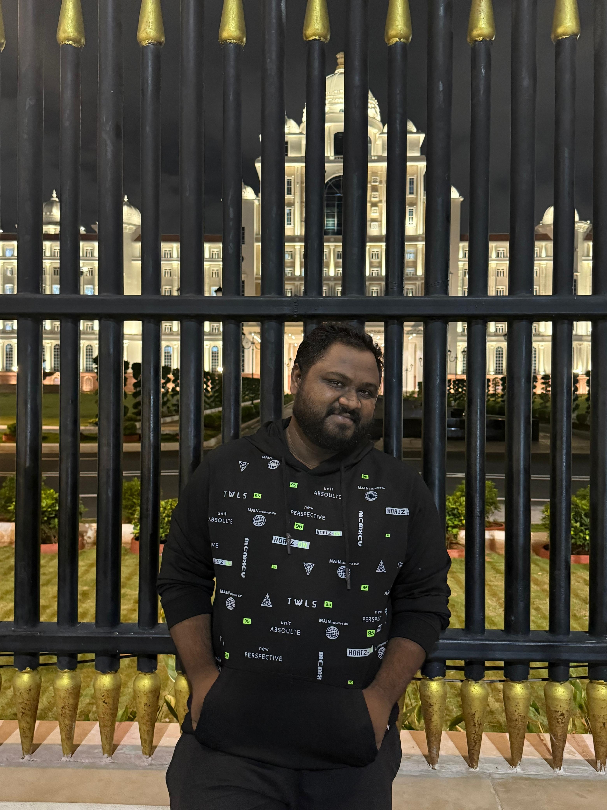

My name is Tummala Chandra Suhas and I have completed my gradution in the the year 2022 from KL University, in the Domain Electronics and Communication Engineering. Later I worked as an Associate software Enginner in TA Digital for 2 Years. There I have worked on Software Testing Domain. Later that company I have joined another organisation called IntouchCX there I have almost worked for 2 years in the same domain there I worked as an Team leader for 3 Projects. There I have handled manual and automation testing for all the CRM sites.
Age: 26
Date of Birth: 26 June 2000
Place of Birth: Vijayawada
House Address: Srinagar Colony
Secondary Education: Sri Chaitanya, Vijayawada
Intermediate: Sri Chaitanya, Vijayawada
Highest level of Qualification: Bachlores
Stream: Bachlores of Technology
Collage: KL University
Job: Associate Software Engineer
Company: TA Digital
Duration: 2 Years
Job: Associate Software Engineer
Company: TA Digital
Duration: 2 Years
